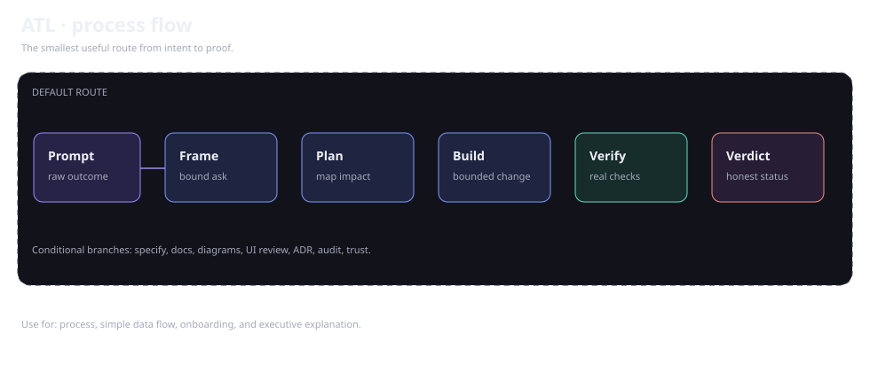
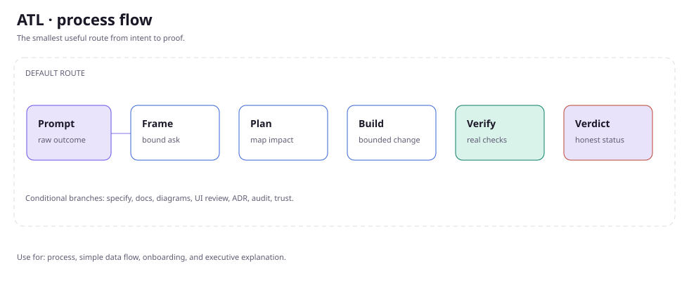
Process flowFor steps, gates, and simple data flow.
Open SVG ↗Use diagrams when architecture, ownership, lifecycle, or impact is easier to understand visually. Keep the source with the docs and keep evidence separate.
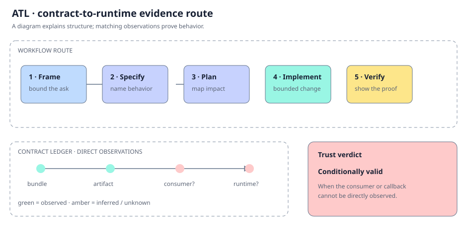
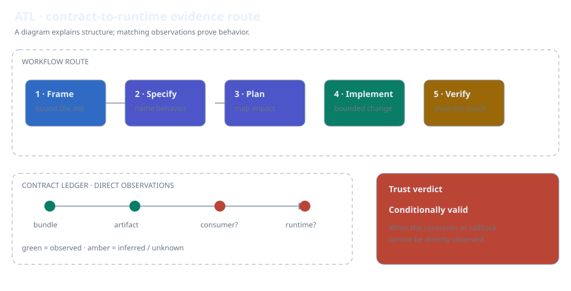
This diagram shows the route from framing a request to verifying its runtime boundaries. Green nodes represent observations; amber nodes represent inferred or unknown contracts.
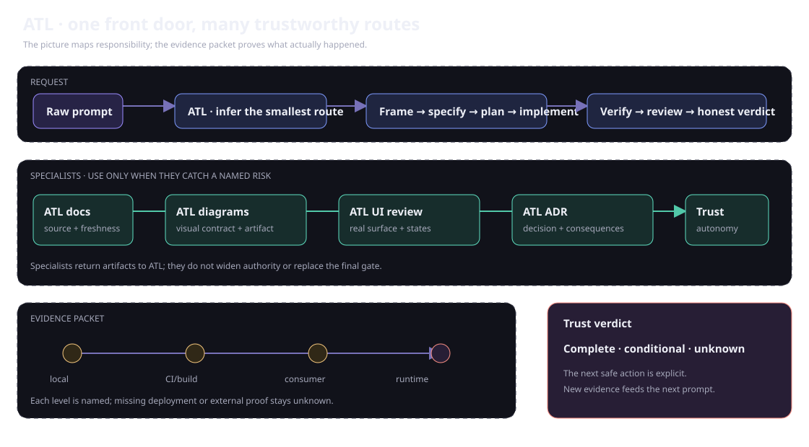
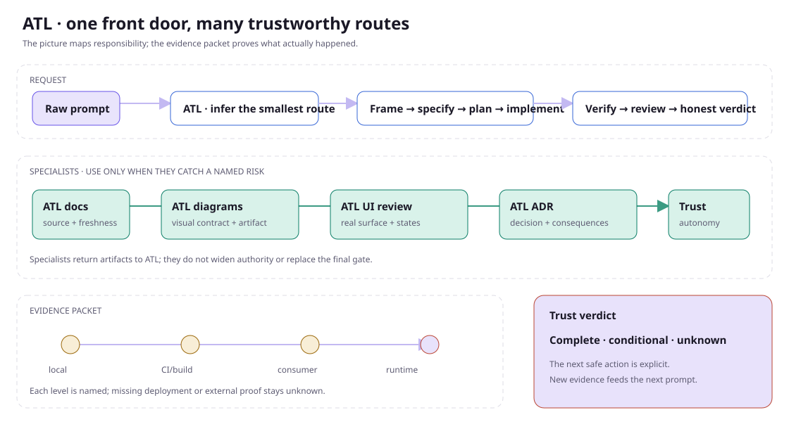
ATL decides the smallest trustworthy route. Documentation, diagrams, UI review, ADRs, and autonomy assessment plug in only when they catch a named risk, then return evidence to the same verdict.
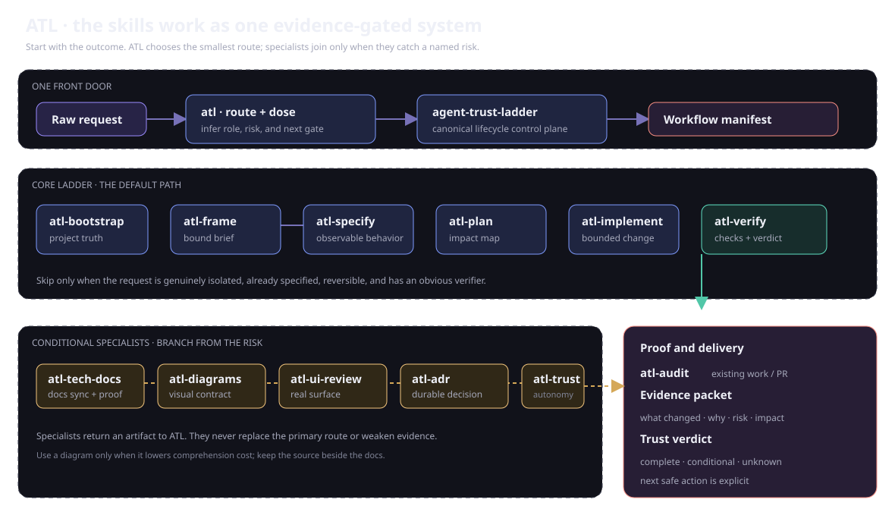
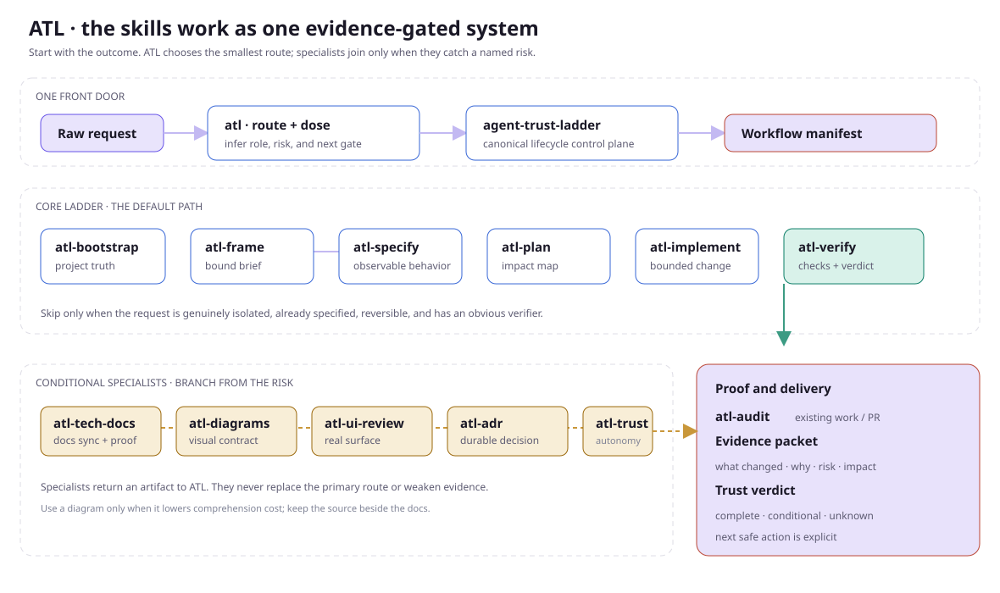
The core ladder stays small. Specialists branch only when the request needs documentation, diagrams, UI evidence, an architecture decision, an audit, or an autonomy decision. Every branch returns to one evidence-backed verdict.
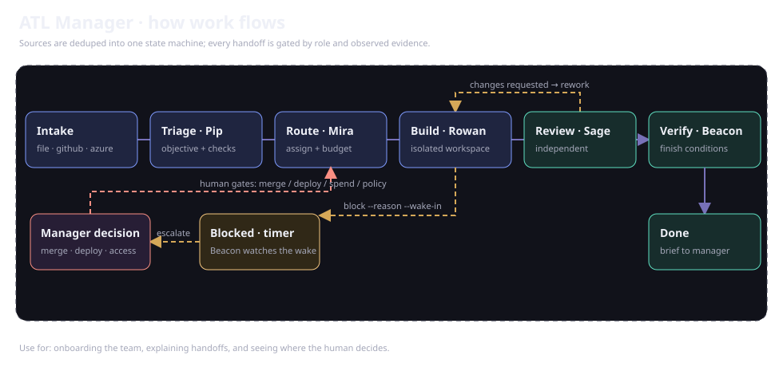
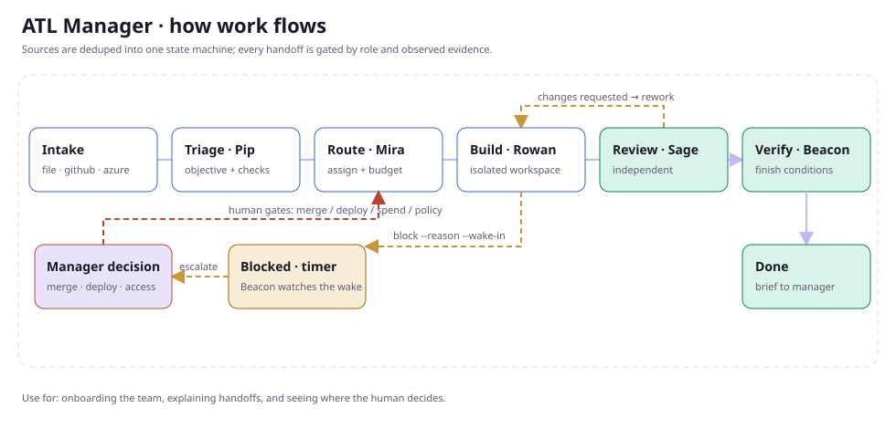
The digital team is names over strict contracts: intake dedupes into one state machine, each handoff is gated by role and observed evidence, blocked work carries a retry timer, and merge, deploy, spend, and policy stay human decisions. The runner lives in runtime/atl-manager.mjs.
Pick the thing a reader needs to understand. You do not need to know the diagram's name.


Process flowFor steps, gates, and simple data flow.
Open SVG ↗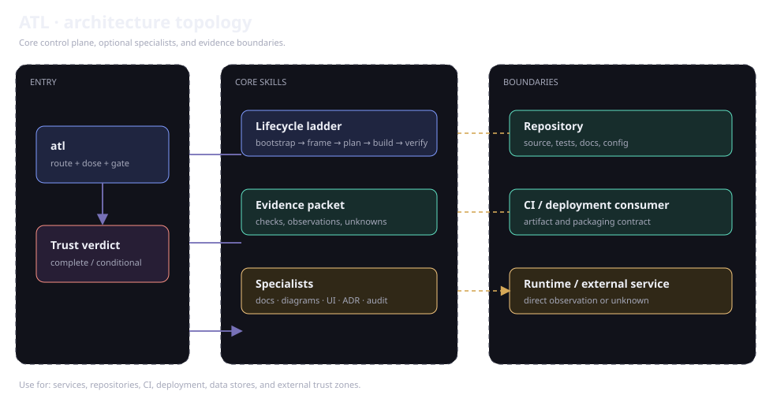
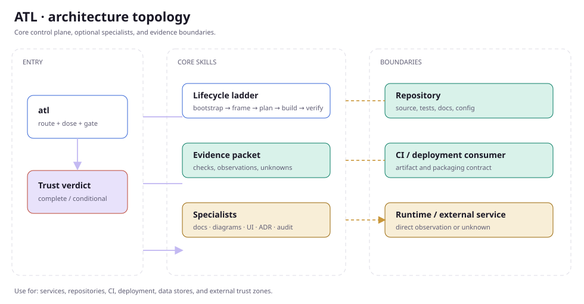
ArchitectureFor components, boundaries, and trust zones.
Open SVG ↗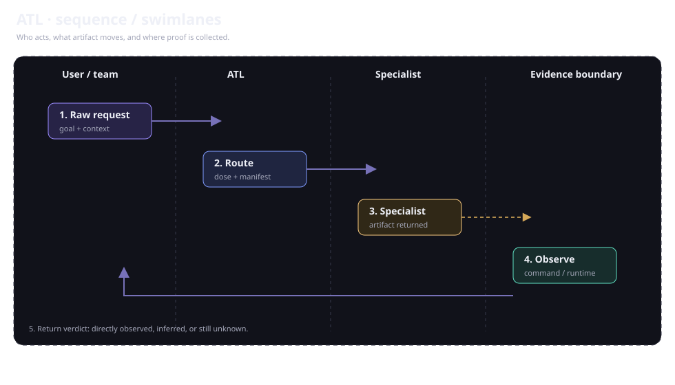
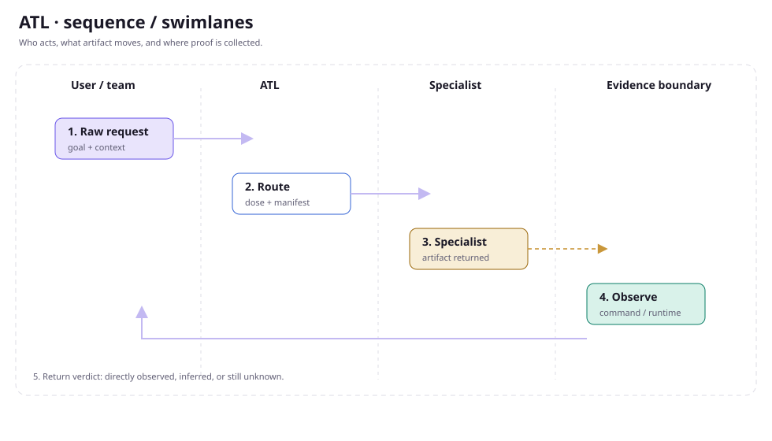
Sequence / swimlaneFor actors, handoffs, and observations over time.
Open SVG ↗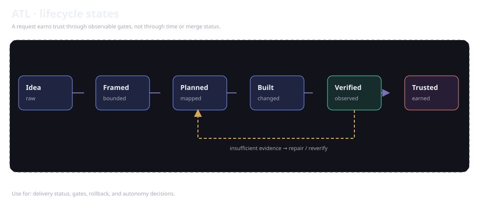
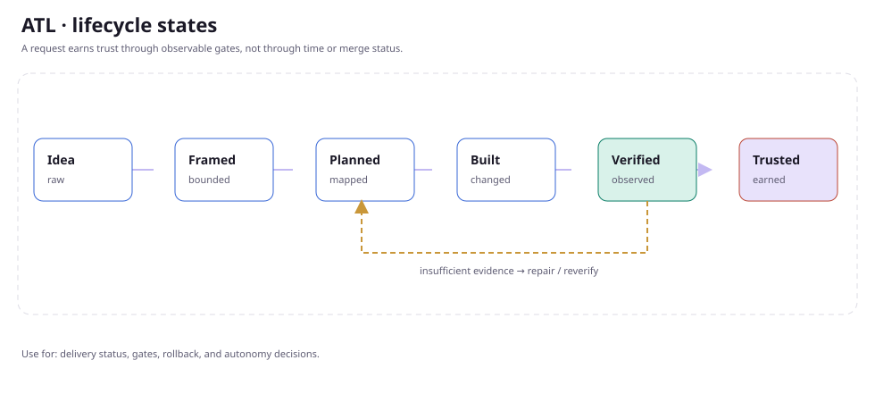
LifecycleFor states, transitions, rework, and gates.
Open SVG ↗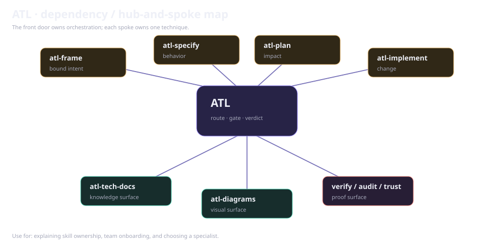
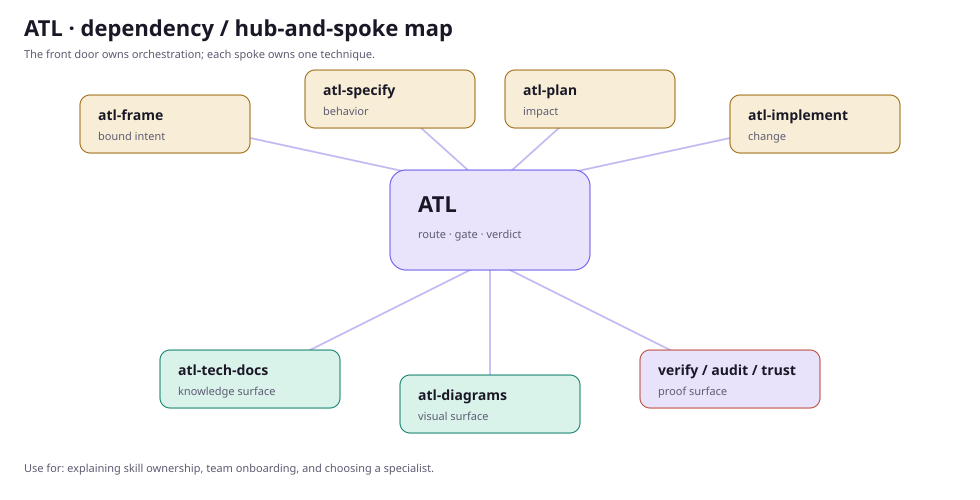
Dependency / hub-spokeFor skill ownership and specialist composition.
Open SVG ↗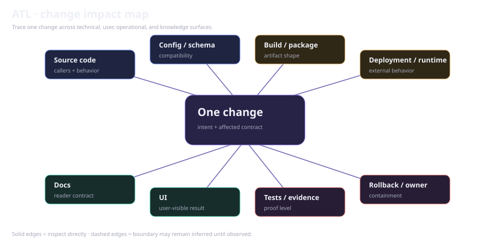
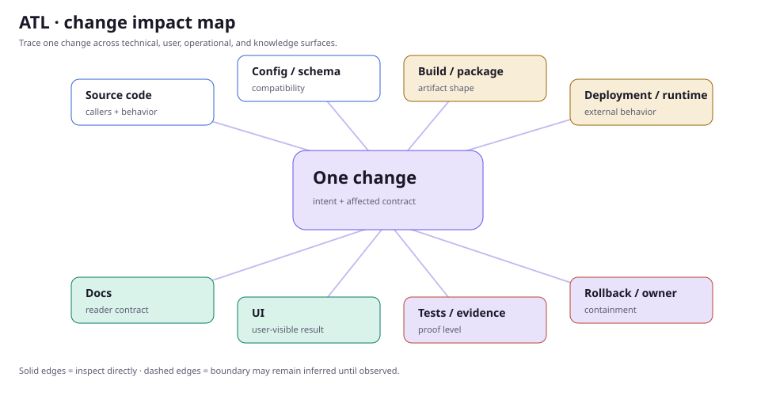
Impact mapFor contracts, consumers, docs, UI, and rollback.
Open SVG ↗Services, stores, queues, trust zones, and external dependencies.
Producer payload, transport, adapter, workflow, persistence, and user result.
States, transitions, gates, rollback, recovery, and ownership.
Which consumers, docs, tests, and deployment contracts a change touches.
The Diagram Maker & Visualizer can create polished SVG/HTML or editable Excalidraw artifacts. ATL still requires the matching command or runtime observation for every behavior claim.
Read the diagram tool reference ↗